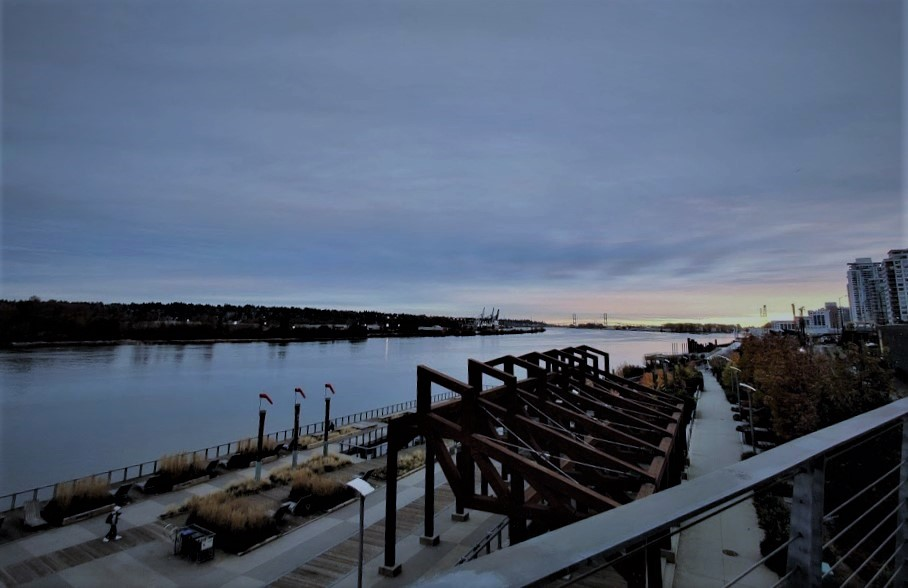

<header>
	{% if page.toc %}
		{% include header-wTOC.html %}
	{% else %}
		{% include header-wtTOC.html %}
	{% endif %}
</header>
<main>
	<div id="loading"></div>		
	<div id="page">
    <div class="parallax-container">

		<div class="typing-effect-container slide-top">
				<p>
					<span class="landing-title-text">
						<span style="color: rgb(201, 35, 35)"></span>Brandon : <span class="typed-text"></span><span class="cursor">&nbsp;</span>
					</span>
				</p>
		</div>

		<div class="parallax"></div>

	</div>

	<div id="bg"></div>
	<div class="container">
		<div class="row  landing-page-row">
			{{ content }}
			{% if site.disqus_shortname and page.comment %}
			  {% include disqus.html %}
			{% endif %}
		</div>
	</div>

	<!--
    <div class="parallax-container">
		<div class="parallax"></div>
	</div>

    <div class="parallax-container">
		<div class="parallax"></div>
	</div>

    <div class="parallax-container">
		<div class="parallax"></div>
	</div>
	-->
</div>
	</div>
</main>